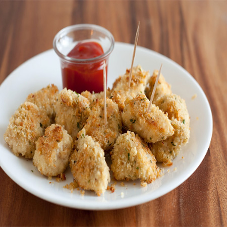

Chronicles Of A Young Mom
Home Page
Baked Chicken Nuggets

Prep time: 20 min. Cook time: 20min Ready In: 40 min.
Ingredients:
- 3 skinless, boneless chicken breasts
- 1 cup Italian seasoned bread crumbs
- 1/2 cup grated Parmesan cheese
- 1 teaspoon salt
- 1 teaspoon dried thyme
- 1 tablespoon dried basil
- 1/2 cup butter, melted
Directions:
- Preheat oven to 400 degrees F (200 degrees C)
- Cut chicken breasts into 1 1/2-inch sized pieces. In a medium bowl, mix together the bread crumbs, cheese, salt, thyme and basil. Mix well. Put melted butter in a bowl or dish for dipping.
- Dip chicken pieces into the melted butter first, then coat with the breadcrumb mixture. Place the well-coated chicken pieces on a lightly greased cookie sheet in a single layer, and bake in the preheated oven for 20 minutes.